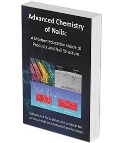

Отвъд митовете.
До същината.
Научни данни и актуални изследвания. Разберете не само резултатите, а и как се стига до тях.
ETALON CARE ПРЕДСТАВЯ
Два дни с Дъг ШунDOUG SCHOON
Два дни професионално обучение за маникюристи, педикюристи, преподаватели и салонни екипи. Научете как работят ноктите и професионалните продукти.
Регистрация от 01 ноември 2026 г.
ОТ ТЕХНИКАТА КЪМ РАЗБИРАНЕТО
Научете как са изградени ноктите, как взаимодействат професионалните продукти и как научното разбиране води до по-безопасна и уверена работа.
ЗНАНИЕ С ПРАКТИЧЕСКА СТОЙНОСТ
Два дни, посветени на по-доброто разбиране на ноктите, продуктите и безопасната професионална работа.
Научни данни и актуални изследвания. Разберете не само резултатите, а и как се стига до тях.
Разберете как е изграден естественият нокът и кои са особеностите, които определят професионалната работа.
Научете защо различните материали се държат по различен начин и как взаимодействат с нокътната плочка.
Практически принципи за безопасност, информиран избор на продукти и по-високо качество в салона.
Разгледайте често срещани проблеми и научните процеси, които обясняват причините зад резултата.
ДВУДНЕВНА КОНФЕРЕНЦИЯ
Научните теми, практическото им приложение и финална сесия с въпроси. Без сравнения на конкретни марки.
Подробната програма по часове и разпределението на темите ще бъдат обявени допълнително.
ЗАПОЗНАЙТЕ СЕ С ЛЕКТОРА

НАУКАТА, ОБЯСНЕНА ОТ ПЪРВО ЛИЦЕ
Дъг Шун е химик, автор и международен преподавател с над 35 години опит в козметичната индустрия.
Той е магистър по химия от Калифорнийския университет в Ървайн и автор на Nail Structure & Product Chemistry и поредицата Face-to-Face with Doug Schoon.
Неговият принос включва повече от 100 статии и участие в създаването на професионалните учебници Milady и Pivot Point. През 1986 г. основава Chemical Awareness Training Service — компания за обучения по безопасност в индустрията за красота.
ЗА ПРОФЕСИОНАЛИСТИ, КОИТО ПРОДЪЛЖАВАТ ДА УЧАТ
По-дълбоко разбиране на продуктите и процесите, с които работите всеки ден.
Научна основа за знанията, които предавате на следващото поколение професионалисти.
По-висока професионална култура и по-информирани решения във вашия екип.
ВАШЕТО МЯСТО В ЗАЛАТА
Изберете как да преживеете конференцията. Регистрацията отваря на 1 ноември 2026 г.
ВКЛЮЧЕНО И В ДВАТА ПАКЕТА
ПЪЛНОТО ПРЕЖИВЯВАНЕ
600 €
За двата дни на конференцията
ОЩЕ ПО-БЛИЗО ДО ЗНАНИЕТО
700 €
Всичко общо + премиум допълнения за 100 €
Възможност за плащане на 2 вноски до края на януари 2027 г. Подробните условия ще бъдат обявени при отваряне на регистрацията.
21–22 МАРТ 2027 / СОФИЯ
Конференцията ще се проведе на 21–22 март 2027 г. в Гранд хотел Милениум София, бул. „Витоша“ 89B. Два дни лично с Дъг Шун, на английски език със симултанен превод на български. Подходяща е за професионалисти от София и цяла България.
Виж местоположениетоПри регистрация ще можете да изберете от наличните места. Мястото се счита за окончателно запазено след потвърдено плащане.
Добави в календараНа 1 ноември 2026 г. Регистрацията продължава до изчерпване на капацитета от 100 участници.
Не. Конференцията е на английски със симултанен превод на български език, включен и в двата пакета.
Стандарт включва двата дни, превод, избор на стандартно място и сертификат. Премиум добавя място на първи ред, книга и автограф от Doug Schoon.
Документът на организатора предвижда тази възможност до края на януари 2027 г. Точните срокове и условия ще бъдат публикувани с регистрацията.
Да. Финалната част на конференцията е посветена на въпросите на участниците. Лекторът не коментира и не сравнява конкретни марки.
Изборът е част от регистрацията. Окончателното запазване става след потвърдено плащане според публикуваните условия.
Ще научите повече за структурата на естествения нокът, химията на професионалните продукти, безопасната работа и причините зад често срещани резултати.
Да. Обясненията са предназначени за маникюристи, педикюристи, преподаватели, инструктори, собственици и екипи на салони.
В Гранд хотел Милениум София на 21–22 март 2027 г., със симултанен превод на български език.
100 ПРОФЕСИОНАЛИСТИ. 2 ДНИ. 1 ИЗКЛЮЧИТЕЛЕН ЛЕКТОР.
21–22 март 2027 · София